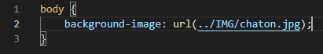
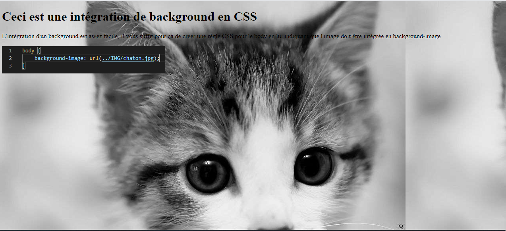
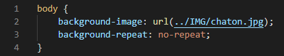
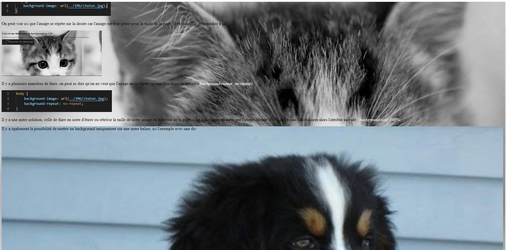
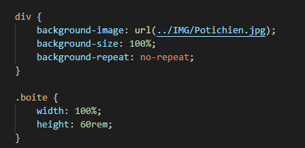
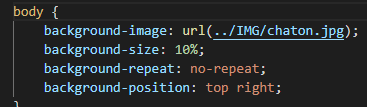
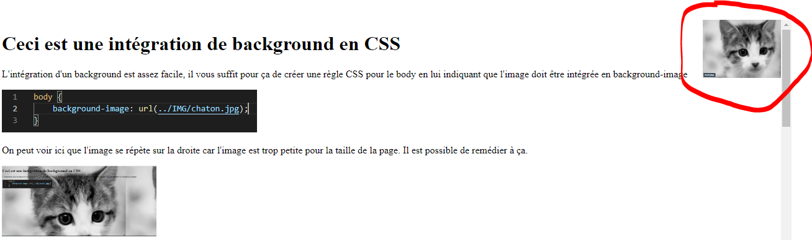
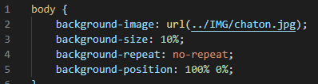

L'intégration d'un background est assez facile, il vous suffit pour ça de créer une règle CSS pour le body en lui indiquant que l'image doit être intégrée en background-image

On peut voir ici que l'image se répète sur la droite car l'image est trop petite pour la taille de la page. Il est possible de remédier à ça.

Il y a plusieurs manières de faire, on peut se dire qu'on ne veut que l'image ne se répète qu'une fois alors on utilisera background-repeat: no-repeat;

Il y a une autre solution, celle de faire en sorte d'étirer ou rétrécir la taille de notre image en fonction de la page, c'est à dire faire en sorte que l'image occupe 100% de l'écran. On utilisera alors l'attribut suivant : background-size: 100%;
Il y a également la possibilité de mettre un background uniquement sur une autre balise, ici l'exemple avec une div

On voit ici qu'il est possible d'avoir deux images de fond, ce n'est plus très lisible, mais il est possible de le faire.

On peut également placer une image dans une partie précise de l'écran, pour cela, il y a deux manières de faire :
La première est de lui indiquer ou on veut qu'elle aille en lui indiquant de cette façon : background-position: top right;


Il est également possible de lui donner une position en pourcentage (par rapport à l'endroit ou l'image se situe sur la page) en utilisant l'attribut : background-position: 100% 0%; On voit qu'il se situe également en haut à droite car le 100% lui indique qu'il doit être a droite et le 0% qu'il doit être en haut. Ce qui permet plus facilement d'intégrer une image à un endroit voulu.
